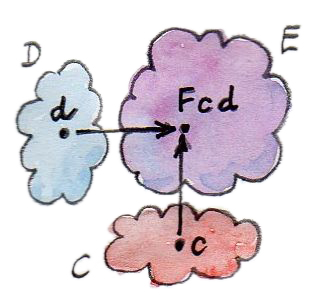
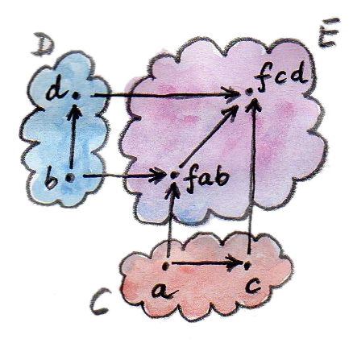
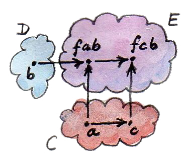
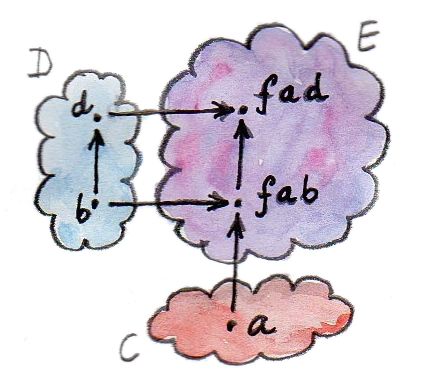
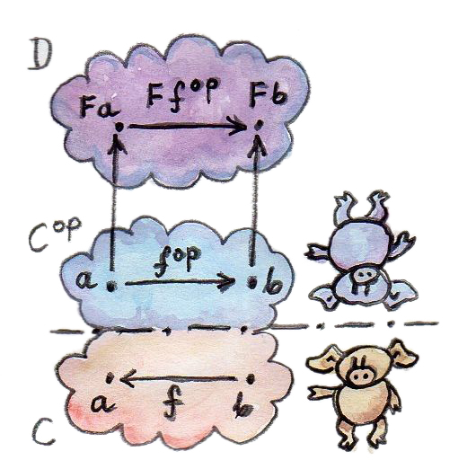
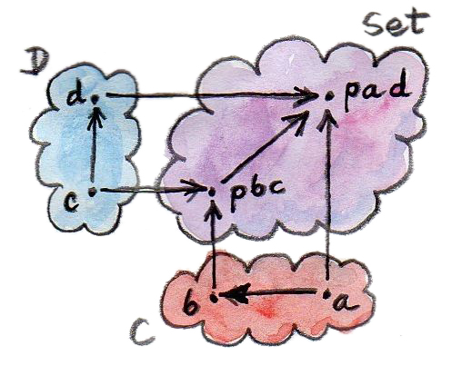

现在你已经知道函子是什么，也看过几个例子，下面看看怎样用较小的函子构造更大的函子。尤其值得研究的是：哪些类型构造器——它们对应范畴对象之间的映射——可以扩展成函子，也就是同时包含态射映射。
双函子
函子是 Cat（范畴之范畴）中的态射，因此许多关于态射——特别是函数——的直觉也适用于函子。例如，函数可以有两个参数，函子同样可以有两个参数，这叫作双函子（bifunctor）。在对象层面，双函子把每一对对象——一个来自范畴 C，一个来自范畴 D——映射到范畴 E 中的一个对象。换句话说，它是从范畴的笛卡尔积（Cartesian product） C×D 到 E 的映射。

这很直接。但函子性意味着双函子还必须映射态射；这一次，它要把一对态射——分别来自 C 与 D——映射成 E 中的一个态射。
一对态射正是积范畴 C×D 中的一支态射。范畴笛卡尔积中的态射定义为一对态射，它从一对对象指向另一对对象。态射对按显然的方式复合：
这个复合满足结合律，并且有恒等元——一对恒等态射 (id, id)。因此范畴的笛卡尔积确实是一个范畴。
理解双函子的一个简单办法，是分别把它看成每个参数上的函子。这样便不必把函子的结构定律——保持复合与恒等——重新翻译成双函子定律，只需对每个参数分别检查。不过一般而言，分别具有函子性并不足以证明联合函子性。联合函子性失败的范畴称为预幺半范畴（premonoidal category）。
下面在 Haskell 中定义双函子。这里三个范畴相同，都是 Haskell 类型范畴。双函子是接受两个类型参数的类型构造器。下面的 Bifunctor 类型类定义直接取自 Control.Bifunctor：
class Bifunctor f where
bimap :: (a -> c) -> (b -> d) -> f a b -> f c d
bimap g h = first g . second h
first :: (a -> c) -> f a b -> f c b
first g = bimap g id
second :: (b -> d) -> f a b -> f a d
second = bimap id
bimap类型变量 f 表示双函子。在所有类型签名中，它始终应用于两个类型参数。第一个签名定义 bimap，它同时映射两个函数。结果是一个提升后的函数 f a b -> f c d，作用于双函子类型构造器生成的类型。定义还给出了以 first 与 second 表示的 bimap 默认实现。（前面提过，这并非总能成立，因为两个映射可能不交换，即 first g . second h 未必等于 second h . first g。）
另外两个签名 first 与 second 分别是两种 fmap，证明 f 在第一个与第二个参数上具有函子性。

first
second类型类定义又用 bimap 给出了二者的默认实现。
声明 Bifunctor 实例时，可以实现 bimap 并接受 first、second 的默认实现；也可以实现 first 与 second，接受 bimap 的默认实现。（当然也可以三个都实现，但必须自行保证它们保持上述关系。）
积与余积双函子
双函子的一个重要例子是范畴积——通过泛构造定义的两个对象之积。若每对对象的积都存在，那么从这两个对象到其积的映射具有双函子性。这在一般范畴中成立，在 Haskell 中尤其如此。下面是 pair 构造器——最简单的积类型——的 Bifunctor 实例：
instance Bifunctor (,) where
bimap f g (x, y) = (f x, g y)这里几乎没有别的选择：bimap 把第一个函数应用于 pair 的第一项，把第二个函数应用于第二项。给定类型，代码几乎会自己写出来：
bimap :: (a -> c) -> (b -> d) -> (a, b) -> (c, d)双函子在对象上的作用就是配对类型，例如：
(,) a b = (a, b)根据对偶性，若范畴中每对对象都有余积，余积也是双函子。在 Haskell 中，Either 类型构造器就是 Bifunctor 实例：
instance Bifunctor Either where
bimap f _ (Left x) = Left (f x)
bimap _ g (Right y) = Right (g y)这段代码同样几乎是由类型自动写成的。
还记得幺半范畴吗？幺半范畴定义作用于对象的二元运算符以及单位对象。我提过，Set 关于笛卡尔积是幺半范畴，单元素集合为单位；关于不交并也构成幺半范畴，空集为单位。此前没有说的是：幺半范畴的一项要求，是这个二元运算符必须为双函子。这很重要——我们希望幺半积与由态射定义的范畴结构兼容。现在距离幺半范畴的完整定义又近了一步；但还需理解自然性。
函子化代数数据类型
我们见过若干参数化数据类型，并成功为它们定义 fmap，证明它们是函子。复杂数据类型由简单类型构造。尤其是，代数数据类型（algebraic data type，ADT）由和与积构造。刚刚看到和与积具有函子性，也知道函子可以复合。所以，只要证明 ADT 的基本构件具有函子性，就知道参数化 ADT 也具有函子性。
参数化 ADT 的基本构件有哪些？首先，是不依赖函子类型参数的项目，例如 Maybe 中的 Nothing 或 List 中的 Nil。它们等价于 Const 函子。记住，Const 忽略它的类型参数——严格说是第二个参数，也就是我们关心的参数；第一个参数保持不变。
其次，是仅仅封装类型参数本身的元素，例如 Maybe 的 Just。它们等价于恒等函子（identity functor）。此前我把恒等函子称为 Cat 中的恒等态射，但没有给出 Haskell 定义：
data Identity a = Identity ainstance Functor Identity where
fmap f (Identity x) = Identity (f x)可以把 Identity 看成最简单的容器，它总是恰好存储一个类型 a 的不可变值。
代数数据结构中的其他一切，都由这两种原语借助积与和构造。
有了这些知识，重新审视 Maybe：
data Maybe a = Nothing | Just a它是两个类型之和，而我们知道和具有函子性。第一部分 Nothing 可以表示成作用于 a 的 Const ()（Const 的第一个参数设为 unit；以后会看到更有趣的用法）。第二部分只是恒等函子的另一个名字。因此在同构意义下，可把 Maybe 定义为：
type Maybe a = Either (Const () a) (Identity a)所以，Maybe 是双函子 Either 与两个函子 Const ()、Identity 的复合。（Const 实际上是双函子，只是这里总对它做偏应用。）
我们已知函子复合仍是函子；很容易相信双函子也如此。只需弄清双函子与两个函子的复合怎样作用于态射：给定两支态射，先分别用两个函子提升它们，再用双函子提升所得的那对已提升态射。
可以用 Haskell 表达这种复合。定义数据类型，它由双函子 bf（接受两个类型参数的类型构造器变量）、两个函子 fu 与 gu（各接受一个类型变量的类型构造器）以及普通类型 a、b 参数化。先把 fu 作用于 a、gu 作用于 b，再把 bf 作用于所得两个类型：
newtype BiComp bf fu gu a b = BiComp (bf (fu a) (gu b))这就是对象或类型上的复合。注意，在 Haskell 中，应用类型构造器与应用函数使用相同语法。
如果有点迷失，试着依次把 BiComp 应用于 Either、Const ()、Identity、a 和 b。你会得到简化版 Maybe b（a 被忽略）。
新数据类型 BiComp 在 a、b 上是双函子，前提是 bf 本身是 Bifunctor，fu、gu 是 Functor。编译器必须知道 bf 有可用的 bimap 定义，fu、gu 有可用的 fmap 定义。Haskell 在实例声明中用前置条件表达这一点：一组类约束后接双箭头：
instance (Bifunctor bf, Functor fu, Functor gu) =>
Bifunctor (BiComp bf fu gu) where
bimap f1 f2 (BiComp x) = BiComp (bimap (fmap f1) (fmap f2) x)BiComp 的 bimap 由 bf 的 bimap 以及 fu、gu 的两个 fmap 定义。每次使用 BiComp 时，编译器都会自动推断所有类型，并选择正确的重载函数。
bimap 定义中的 x 类型是：
bf (fu a) (gu b)这读起来很拗口。外层 bimap 穿过外层 bf，两个 fmap 分别钻到 fu 与 gu 之下。若 f1、f2 类型为：
f1 :: a -> a'
f2 :: b -> b'最终结果类型是 bf (fu a') (gu b')：
bimap ::(fu a -> fu a') -> (gu b -> gu b')
-> bf (fu a) (gu b) -> bf (fu a') (gu b')如果喜欢拼图，这种类型操作足以带来数小时的娱乐。
由此可见，我们其实不必单独证明 Maybe 是函子；这个事实由它作为两个函子化原语之和的构造方式自动推出。
敏锐的读者也许会问：既然为代数数据类型推导 Functor 实例如此机械，能否让编译器自动完成？确实可以，也确实如此。只需在源文件顶部加入一行，启用相应的 Haskell 扩展：
{-# LANGUAGE DeriveFunctor #-}然后在数据结构后添加 deriving Functor：
data Maybe a = Nothing | Just a
deriving Functor对应的 fmap 便会自动生成。
代数数据结构的规律性不仅允许推导 Functor，还允许推导其他多个类型类实例，包括前面提到的 Eq。也可以教编译器推导自己的类型类实例，不过这更高级。思想相同：你为基本构件、和与积提供行为，其余交给编译器推导。
C++ 中的函子
如果你是 C++ 程序员，实现函子显然只能靠自己。不过，你应该能在 C++ 中辨认某些代数数据结构。若把这种结构做成泛型模板，就应能迅速为它实现 fmap。
来看树结构。在 Haskell 中会把它定义为递归和类型：
data Tree a = Leaf a | Node (Tree a) (Tree a)
deriving Functor如前所述，在 C++ 中实现和类型的一种方式是类层次结构。在面向对象语言中，自然会想把 fmap 实现为基类 Functor 的虚函数，再由各子类覆写。遗憾的是，这不可能，因为 fmap 是模板：它不仅由所作用对象的类型（this 指针）参数化，还由所应用函数的返回类型参数化；而 C++ 的虚函数不能模板化。我们将把 fmap 实现成泛型自由函数，并用 dynamic_cast 代替模式匹配。
为了支持动态转换，基类至少要定义一个虚函数，所以把析构函数设为虚函数（无论如何这都是好主意）：
template<typename T>
struct Tree {
virtual ~Tree() {}
};Leaf 只是伪装的 Identity 函子：
template<typename T>
struct Leaf : public Tree<T> {
T _label;
Leaf(T l) : _label(l) {}
};Node 是积类型：
template<typename T>
struct Node : public Tree<T> {
Tree<T> * _left;
Tree<T> * _right;
Node(Tree<T> * l, Tree<T> * r) : _left(l), _right(r) {}
};实现 fmap 时，对 Tree 的具体类型做动态分派。Leaf 分支应用 Identity 版 fmap；Node 分支则像一个双函子与两份 Tree 函子的复合。C++ 程序员也许不习惯这样分析代码，但这是练习范畴论思维的好机会。
template<typename A, typename B>
Tree<B> * fmap(std::function<B(A)> f, Tree<A> * t)
{
Leaf<A> * pl = dynamic_cast <Leaf<A>*>(t);
if (pl)
return new Leaf<B>(f (pl->_label));
Node<A> * pn = dynamic_cast<Node<A>*>(t);
if (pn)
return new Node<B>( fmap<A>(f, pn->_left)
, fmap<A>(f, pn->_right));
return nullptr;
}为简单起见，我忽略了内存与资源管理问题；生产代码中大概应使用智能指针（根据策略选择独占或共享）。
与 Haskell 的 fmap 实现比较：
instance Functor Tree where
fmap f (Leaf a) = Leaf (f a)
fmap f (Node t t') = Node (fmap f t) (fmap f t')这个实现也能由编译器自动推导。
Writer 函子
我答应过会回到前面描述的 Kleisli 范畴。那个范畴中的态射由返回 Writer 数据结构的“修饰”函数表示：
type Writer a = (a, String)我说过这种修饰与自函子有关。的确，Writer 类型构造器在 a 上具有函子性。甚至不必实现 fmap，因为它只是简单积类型。
一般而言，Kleisli 范畴与函子有什么关系？Kleisli 范畴既然是范畴，就定义了复合与恒等。复合由鱼运算符给出：
(>=>) :: (a -> Writer b) -> (b -> Writer c) -> (a -> Writer c)
m1 >=> m2 = \x ->
let (y, s1) = m1 x
(z, s2) = m2 y
in (z, s1 ++ s2)恒等态射由名为 return 的函数给出：
return :: a -> Writer a
return x = (x, "")事实证明，只要长时间盯着这两个函数的类型（我是说，非常久），就能找到组合它们的方法，产生具有正确签名、可以充当 fmap 的函数：
fmap f = id >=> (\x -> return (f x))鱼运算符在这里组合两个函数：一个是熟悉的 id，另一个是 lambda，它先对参数应用 f，再对结果应用 return。最难理解的也许是 id 的用法。鱼运算符的参数不应该接受“普通”类型并返回修饰类型吗？其实并非如此。没有人规定 a -> Writer b 里的 a 必须是“普通”类型；它是类型变量，可以是任何类型，包括 Writer b 这样的修饰类型。
因此，id 会把 Writer a 变成 Writer a。鱼运算符取出其中的 a 值，把它作为 x 传给 lambda；f 在那里把它变成 b，return 再把它修饰成 Writer b。合在一起，就得到从 Writer a 到 Writer b 的函数，恰好是 fmap 应产生的东西。
注意，这个论证非常一般：可以把 Writer 换成任意类型构造器。只要它支持鱼运算符与 return，就能定义 fmap。所以 Kleisli 范畴中的修饰总是函子。（不过，并非每个函子都产生 Kleisli 范畴。）
你也许会问，刚刚定义的 fmap 是否与编译器通过 deriving Functor 推导的相同。有趣的是，确实相同。这源于 Haskell 实现多态函数的方式，称为参数多态（parametric polymorphism），它会产生所谓的免费定理（theorems for free）。其中一条定理说：若某类型构造器存在保持恒等的 fmap 实现，那么它必然唯一。
协变与逆变函子
复习 Writer 函子之后，回到 Reader 函子。它基于偏应用的函数箭头类型构造器：
(->) r可把它重写成类型同义词：
type Reader r a = r -> a它的 Functor 实例是：
instance Functor (Reader r) where
fmap f g = f . g但与 pair 或 Either 类型构造器一样，函数类型构造器也接受两个类型参数。pair 与 Either 在两个参数上都有函子性，因而是双函子。函数构造器也是吗？
尝试让它在第一个参数上具有函子性。先定义一个类型同义词，它与 Reader 相似，只是参数翻转：
type Op r a = a -> r这次固定返回类型 r，改变参数类型 a。看看能否匹配类型以实现如下签名的 fmap：
fmap :: (a -> b) -> (a -> r) -> (b -> r)手里只有两个接受 a、分别返回 b 与 r 的函数，根本无法构造接受 b 并返回 r 的函数！若能把第一个函数反转成接受 b 返回 a，情况就不同。任意函数不能求逆，但我们可以转到对偶范畴。
简要回顾：每个范畴 C 都有对偶范畴 Cop。它与 C 对象相同，但所有箭头反转。
考虑从 Cop 到另一范畴 D 的函子：
它把 Cop 中的态射 fop: a→b 映射为 D 中的 F fop: F a→F b。但 fop 暗中对应原范畴 C 中的态射 f: b→a。注意方向反了。
F 是普通函子，但可基于它定义另一个不是普通函子的映射，称为 G。G 从 C 映射到 D；对象映射与 F 相同，但映射态射时反转方向。它接受 C 中的 f: b→a，先变成反向态射 fop: a→b，再用 F 得到 F fop: F a→F b。
由于 F a 与 G a 相同，F b 与 G b 相同，整个过程可写为：
这是一个“带扭转的函子”。以这种方式反转态射方向的范畴映射，称为逆变函子（contravariant functor）。逆变函子其实就是从对偶范畴出发的普通函子。顺便说，此前研究的普通函子称为协变函子（covariant functor）。

下面是 Haskell 中定义逆变函子（严格说是逆变自函子）的类型类：
class Contravariant f where
contramap :: (b -> a) -> (f a -> f b)类型构造器 Op 是它的实例：
instance Contravariant (Op r) where
-- (b -> a) -> Op r a -> Op r b
contramap f g = g . f注意，函数 f 插入在 Op 内容——函数 g——的前面，也就是右边。
若注意到它只是参数翻转后的函数复合运算符，Op 的 contramap 定义还可更简短。翻转参数的专用函数叫 flip：
flip :: (a -> b -> c) -> (b -> a -> c)
flip f y x = f x y于是得到：
contramap = flip (.)Profunctor
我们看到函数箭头运算符在第一个参数上逆变，在第二个参数上协变。这样的东西有名字吗？若目标范畴是 Set，它称为 Profunctor。逆变函子等价于从对偶范畴出发的协变函子，因此 Profunctor 定义为：
粗略说 Haskell 类型就是集合，因此把 Profunctor 这个名字用于双参数类型构造器 p：它在第一个参数上逆变，在第二个参数上协变。下面是 Data.Profunctor 库的相应类型类：
class Profunctor p where
dimap :: (a -> b) -> (c -> d) -> p b c -> p a d
dimap f g = lmap f . rmap g
lmap :: (a -> b) -> p b c -> p a c
lmap f = dimap f id
rmap :: (b -> c) -> p a b -> p a c
rmap = dimap id三个函数都有默认实现。与 Bifunctor 相同，声明 Profunctor 实例时，可以实现 dimap 并接受 lmap、rmap 的默认值，也可以实现后二者并接受 dimap 的默认值。

dimap现在可以断言，函数箭头运算符是 Profunctor 实例：
instance Profunctor (->) where
dimap ab cd bc = cd . bc . ab
lmap = flip (.)
rmap = (.)Profunctor 应用于 Haskell 的 lens 库。讨论端与余端时，我们还会见到它。
Hom 函子
以上例子反映了一个更一般的结论：把一对对象 a、b 映射到二者间态射集合——hom 集 C(a,b)——的映射是函子。它是从积范畴 Cop×C 到集合范畴 Set 的函子。
定义它在态射上的作用。Cop×C 中的态射，是 C 中的一对态射：
g: b → b′
提升这对态射，必须得到从集合 C(a,b) 到集合 C(a′,b′) 的态射（函数）。任取 C(a,b) 的元素 h——即从 a 到 b 的态射——把它映射为：
这正是 C(a′,b′) 的一个元素。可见，Hom 函子（hom-functor）是 Profunctor 的特例。
习题
- 证明数据类型：
是双函子。加分项：实现data Pair a b = Pair a bBifunctor的全部三个方法，并用等式推理说明它们与默认实现兼容。点击展开参考答案
instance Bifunctor Pair where bimap f g (Pair a b) = Pair (f a) (g b) first f (Pair a b) = Pair (f a) b second g (Pair a b) = Pair a (g b)展开默认式：
first f . second g先得到Pair a (g b)，再得到Pair (f a) (g b)，等于bimap f g。同理bimap f id = first f，bimap id g = second g。 - 证明标准
Maybe与下列去糖形式同构：type Maybe' a = Either (Const () a) (Identity a)点击展开参考答案
toMaybe' Nothing = Left (Const ()) toMaybe' (Just x) = Right (Identity x) fromMaybe' (Left (Const ())) = Nothing fromMaybe' (Right (Identity x)) = Just x分别对
Nothing/Just与Left/Right展开，两种复合都还原输入，因此互逆。 PreList用参数b代替递归：
证明它是data PreList a b = Nil | Cons a bBifunctor实例。点击展开参考答案
instance Bifunctor PreList where bimap _ _ Nil = Nil bimap f g (Cons a b) = Cons (f a) (g b)Nil不含参数值；Cons的两个字段分别用两个函数映射。恒等与复合定律逐字段继承自函数定律。- 证明下列数据类型在
a、b上定义双函子：data K2 c a b = K2 cdata Fst a b = Fst adata Snd a b = Snd b加分项：把你的解答与 Conor McBride 的论文 Clowns to the Left of me, Jokers to the Right 对照。
点击展开参考答案
instance Bifunctor (K2 c) where bimap _ _ (K2 c) = K2 c instance Bifunctor Fst where bimap f _ (Fst a) = Fst (f a) instance Bifunctor Snd where bimap _ g (Snd b) = Snd (g b)K2忽略两个参数，Fst只使用第一个，Snd只使用第二个；未使用位置上的函数必然被忽略。 - 在 Haskell 以外的语言中定义双函子，并为泛型 pair 实现
bimap。点击展开参考答案
fun <A, B, C, D> bimap( f: (A) -> C, g: (B) -> D, pair: Pair<A, B> ): Pair<C, D> = f(pair.first) to g(pair.second)两个分量独立映射，因此保持恒等函数与逐分量复合。
std::map在模板参数Key与T上应视为双函子还是 Profunctor？怎样重新设计才能使它成为其中之一？点击展开参考答案
标准
std::map<Key,T>对T可以协变映射；但对Key既不是普通双函子，也不是自然的 Profunctor。把键经任意Key→Key′映射可能发生碰撞，必须额外决定怎样合并值；逆变也无法从新键凭空得到旧键。若把它重新理解为查找函数Key→optional<T>（例如不可变的Reader Key (Maybe T)），便在Key上逆变、在T上协变，从而成为 Profunctor：dimap pre post table = fmap post . table . pre，其中post被提升到optional内。